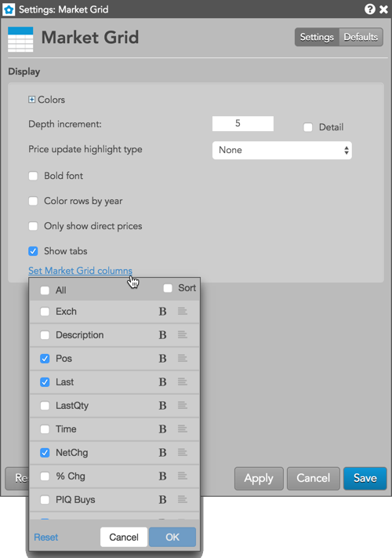
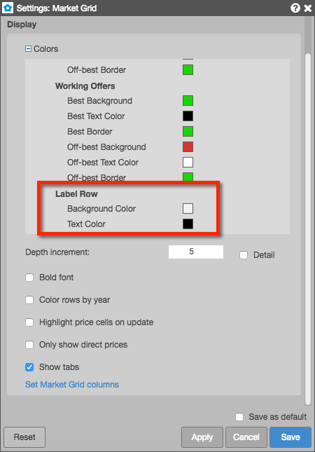
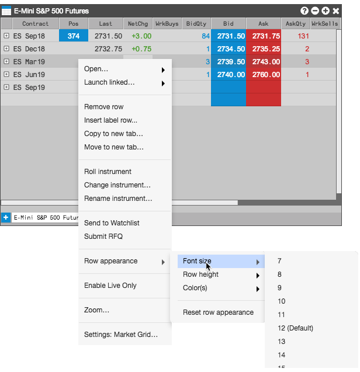
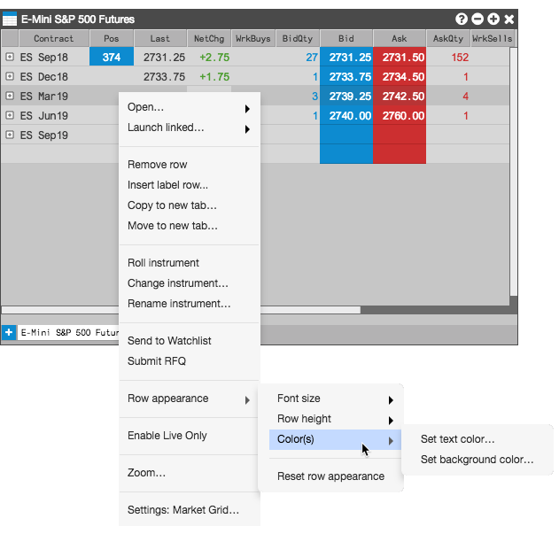
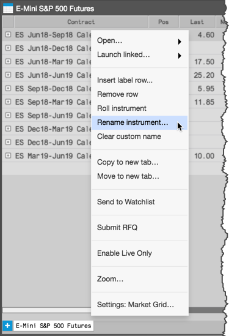
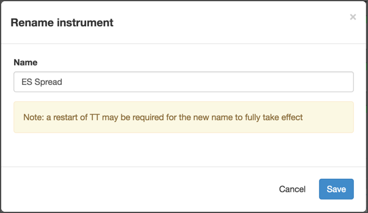

You can configure the display of instruments and market data in the Market Grid by doing the following:
- Changing and reordering columns
- Adding label rows
- Customizing the font and colors for rows
- Coloring rows by year
- Highlighting price updates
- Renaming instrument names
Changing and reordering columns
You can configure the Market Grid display by changing and reordering columns within the grid. You can also set the bold font and text alignment for each column.
Note: If the widget level bold setting is enabled, the column-level bold option is not available.
To change and reorder columns:
-
Right-click in the Market Grid and click Settings... in the context menu.
-
In the Settings: Market Grid screen, click Set Market Grid columns.
-
Check/uncheck each column name to show/hide a column and click OK.
If desired, click Sort to view the list of columns in alphabetical order.

-
To reorder the columns, click-and-hold a column title and move it to a different location in the list.
Tip: You can also click-and-hold a column header and drag it to a new location directly in the Market Grid.
- To set bold font for a column, click
 next to a column in the context menu. When bold is active for a column, the button will be highlighted (
next to a column in the context menu. When bold is active for a column, the button will be highlighted ( ).
).
-
To set the text alignment for a column, click
 to the right of the column name to cycle through the left, centered, and right text alignment settings. You can also adjust the arrangement of your columns by clicking and dragging each column name.
to the right of the column name to cycle through the left, centered, and right text alignment settings. You can also adjust the arrangement of your columns by clicking and dragging each column name.
-
Click Save.
Adding label rows
You can add label rows to help you identify different sections of rows in the Market Grid similar to the following:

To add a label row:
-
Right-click below the place you want to add the label row, and select Insert label row....
-
Enter the desired label text and press <Return>.

The label row is added.

Note: You can also add a label row by selecting a row in the grid and typing the apostrophe (') key.
To rename a label row:
-
Right-click on the label row text and select Edit label.
-
Enter the new label name and press Enter.
To remove a label row, right-click on the row and select Remove row from the context menu.
To change label row colors:
Note: Color changes to label rows or any other Market Grid option are applied to the entire widget, including all tabs on that widget.
-
Right-click in the Market Grid and select Settings: Market Grid.
Expand the Colors settings and scroll to Label Row to customize the colors.

- Click Apply and Save.
Customizing the appearance of rows
You can customize the font size, row height and colors of each individual row in the Market Grid using the Row appearance context menu options.
To customize the font size for rows, right-click a row and select Row appearance > Font size to choose a font size.

To customize the row height, right-click a row and select Row appearance > Row height to choose a height.

To change the color of the text or background, right-click the row and select Row appearance > Color(s) > Set text color... or Set background color....

Note: The column colors set in Settings: Market Grid | Colors will override the custom colors set for the row.
Coloring rows by year
You can enable row coloring to show all contracts within rolling 12-month periods with different colors.

To color contracts for successive years:
-
Right-click in the grid to display the context menu, and select Settings.
-
In the Market Grid Settings, enable the Color rows by year setting.
-
Click Apply and click Save.
Highlighting price updates
To highlight a price cell every time it updates:
-
Right-click in the grid to display the context menu, and select Settings.
-
In the Market Grid Settings, enable the Highlight price cells on update setting.
-
Click Apply then click Save.
Renaming an instrument in the Market Grid
Optionally, you can rename the instruments displayed in the Market Grid by right-clicking the instrument name in the Contract column and selecting Rename Instruments... in the context menu.

In the Rename Instrument dialog box that opens, enter the new instrument name and click Save.
